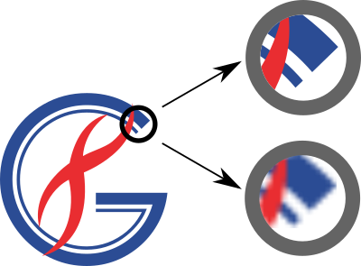
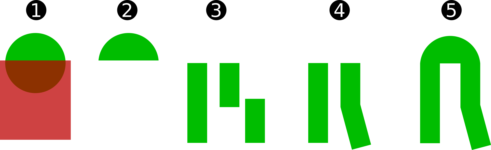

Raster vs Vectorial
Raster es una imagen formada por una matriz de bits. Cada celdilla de la matriz tiene información sobre el color de un punto de la imagen.
Vectorial es una imagen con información de curvas y áreas.
Una imagen vectorial puede llevar insertadas imágenes raster.
¿Todo en vectorial?
Las fotografías están mejor representadas en formato raster.
Formatos raster
A menos que sepamos muy bien lo que estamos haciendo, utilizaremos PNG para nuestras imagenes rasterizadas.
Mientras estemos trabajando en cualquier programa, utilizaremos su formato nativo (Gimp = XCF, Photoshop = PSD). Exportaremos a PNG cuando sea necesario.
Nombre
Pérdida
Bueno para
PNG
No
Todo
JPEG
Sí
Fotos. Web
TIFF
No
Fotos HiRes
GIF
Sí
Tumblr
BMP
No
Nada
Resolución
La resolución es el detalle que tiene la imagen. Es una medida visual. Las revistas piden resoluciones mínimas de 300 ppp porque a partir de ese valor el ojo no detecta aumentos en la cantidad de puntos-por-pulgada.
Formatos vectoriales y mixtos
Nombre
Uso
Problemas
SVG
Todos
-
PS/EPS
Impresión HiRes
Obsoleto
Vectores e imágenes
-
AI
Adobe Ilustrator
Propietario
Inkscape vs Powerpoint
Powerpoint es para hacer presentaciones.
Inkscape es para hacer pósters (aka infografías), figuras y esquemas.


Inkscape: básico
- Casi todas las herramientas modifican su comportamiento pulsando Ctrl, Shift o Ctrl + Shift.
- Las formas básicas están a la izquierda. Casi siempre se utilizan rectángulos (F4), círculos (F5) y polígonos (*). Para trazar líneas usaremos la pluma Bezier (Shift+F6).
- Una vez creada la forma, la tendremos en modo "edición" (F2). Si cambiamos al modo "selección" (F1) podremos cambiar el tamaño. Pulsando sobre la forma podremos rotarla.
- Los objetos se apilan en el eje Z. Podremos bajarlos o subirlos con Inicio, Fin, AvPag y RePag, o con los botones. Para seleccionar objetos ocultos pulsamos Shift + Click.
Inkscape: organización
Esto también lo tiene Powerpoint, y es la base de una figura limpia. Con "align", "distribute" y "group/ungroup" ordenaremos todos los elementos.
El método de organización da igual, pero lo mejor es elegir uno ("last selected") y usarlo siempre. Se seleccionan todos los elementos a mover y se añade el elemento de referencia.
En el menu "Edit->Clone->Create Tiled Clones..." podéis crear múltiples clones de un objeto. Para manipular los elementos creados hay que desligarlos del objeto original (Shift+Alt+D).
Inkscape: paths
Los paths son el núcleo de Inkscape y de todo lo vectorial. Aunque empecemos con una forma, acabaremos manipulando los paths de esa forma.
- Para transformar una forma en un path, Path -> Object to Path/Stroke to Path.
- Al entrar en modo "edición" veremos los puntos de control. Por el punto de control pasa el path, y los "handle nodes" marcan el paso del path.
- Los paths nos permiten todas las operaciones booleanas, que serán la base para crear formas complejas.
Inkscape: texto
Por desgracia Inkscape no es muy bueno para grandes cantidades de texto, hay que hacerlo todo artesanal. Sin embargo hay un par de goodies:
- Text to Path. Dibujamos un path Bezier y escribimos un texto. "Text->Put on Path" y listo. Editando el path, se ajusta el texto.
- Text flowed. Dibujamos una forma, la pasamos a path y escribimos un texto. "Text->Flow into Frame" y listo. Así podemos ajustar textos sobre figuras, sin limitarnos a los ángulos rectos.
- Manejo fino. Rotación, kerning y alturas por letra individualmente.
Nada de esto debería usarse mucho.
Inkscape: documento
Se puede ajustar nuestro trabajo a un documento de salida (A4, A0...). Si exportamos el trabajo a .PDF sólo lo hará la parte definida en los límites.
- File -> Document Properties...
- Page para configurar el tamaño o el background de página.
- Grid para mostrar las guías para colocar objetos.
Hands on: boceto inicial
Hands on: paso 1
Crear el fosfolípido:
- Añadir un círculo y un rectángulo, con el rectángulo encima.
- Path -> Diference.
- Añadir tres rectángulos verticales por duplicación.
- Snap cusp nodes. Union.
- Reservar la figura para después.
Hands on: paso 2
Crear los iones K
- Añadir un círculo amarillo. Editamos el gradiente (opcional).
- Añadir una "K" y un "+". Ajustar el tamaño y agrupar. Centrar en la esfera.
- Agrupar la esfera y las letras.
Hands on: paso 3.1
Crear la proteína.
- Crear un rectángulo y redondearle los bordes.
- Creamos las máscaras de recorte: dos círculos y un rectángulo vertical.Duplicamos los círculos de recorte y los enviamos al fondo (tecla [Fin]), los necesitaremos en el paso 6.
- Ponemos cada círculo encima y seleccionamos la proteína. Centramos todo, lo distribuimos verticalmente y Path -> Difference.
- Hacemos lo mismo con el rectángulo, centrado y Path -> Difference.
- La forma que deberíamos obtener.
- Con los círculos duplicados los transformamos: Object -> Transform -> Scale -> 90
Hands on: paso 3.2
Finalizamos la proteína.
- Centramos los círculos sobre la vertical, dejando un pequeño gap.
- Creamos un círculo/rectángulo sobre todo el complejo, centrado. Lo duplicamos, porque va a desaparecer con los recortes.
- Path -> Intersection con cada loop (los círculos rojo y verde).
- Creamos la bisagra con una Bezier, color al Stroke con gotero y Width a 20px. Path -> Stroke to path.
- La duplicamos, volteamos en vertical y cambiamos el color con gotero.
- Hacemos Path -> Union, cada bisabra con su círculo.
- Resultado final.
Hands on: paso 4
Organizarlo todo. Esta es la operación más tediosa y la más habitual.
- Duplicamos (Ctrl + D) cinco o seis veces la figura del paso 1. Seleccionamos una, la llevamos a la derecha y distribuimos.
- Agrupamos lo anterior, lo duplicamos y lo volteamos en la vertical. Duplicamos de nuevo
- Traemos nuestra proteina y la ponemos encima (tecla [Inicio]).
- Rotamos cada loop 45-60º.
Hands on: final
Añadimos nuestros iones K+ del paso 2, añadimos los textos que queramos y ya tenemos la base de nuestra membrana.
Ahora simplemente duplicando todo podemos tener una figura en la que representemos todo el ciclo de activación
Listo para publicar!
Moar!
- Los tutoriales de Inkscape.
- Buscar infographics + SVG en google. Buscando con "filetype:svg" conseguiréis archivos listos para editar o robarle formas abriéndolos con Inkscape.
- Canal de Nick Saporito, especialmente los vídeos marcados como "Inkscape Explained" y "Beginners".
Gimp
Gimp es un programa muy completo y complejo, pero nos va a permitir hacer algunas cosas muy simples con las imágenes raster.
- Resize, Crop, Rotate, Levels...
- Transformar formatos.
NUNCA sobreescribir las imágenes originales. Aunque creamos que los niveles corregidos o el crop están mejor que en la original.